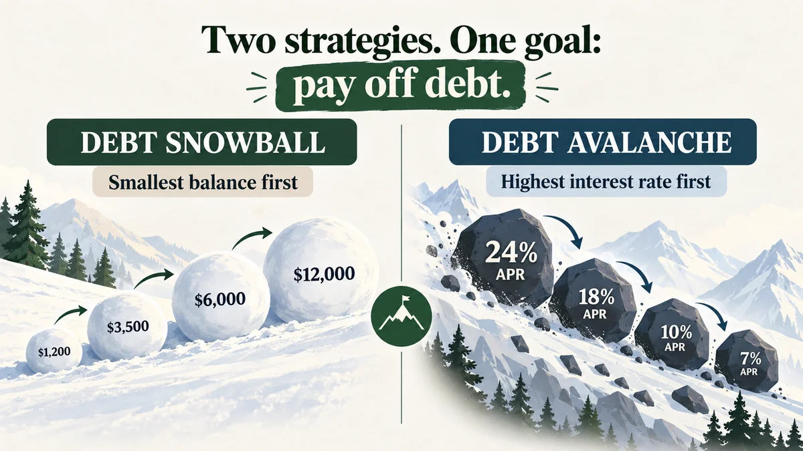
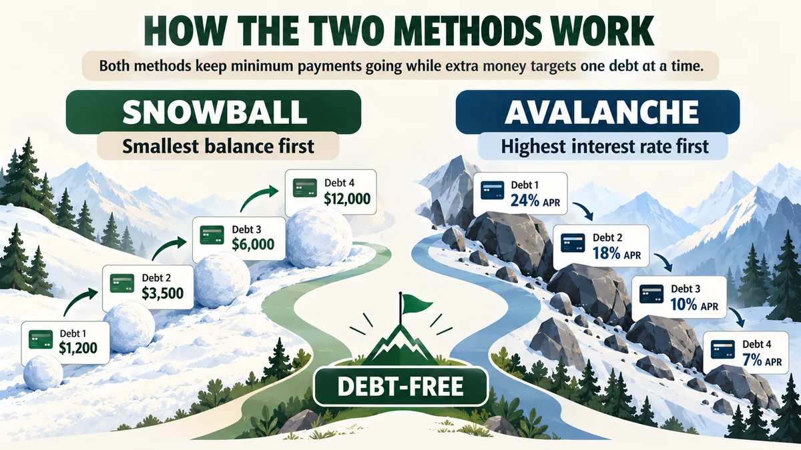
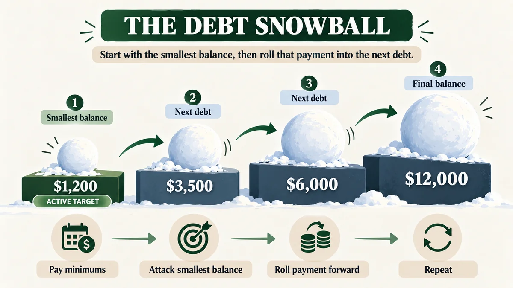
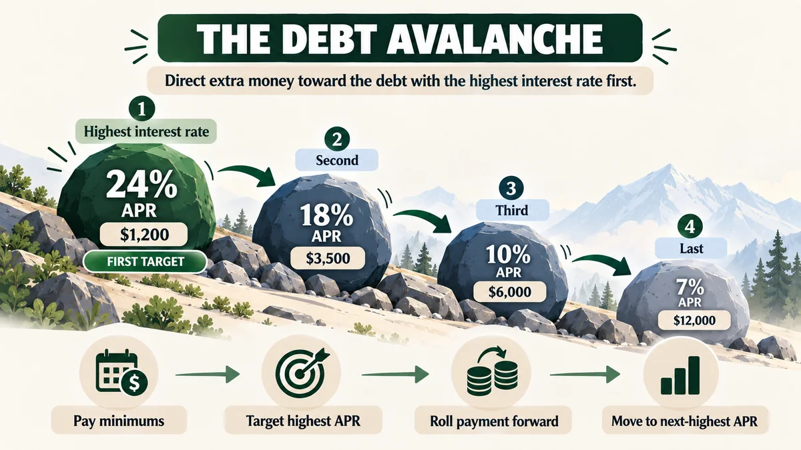
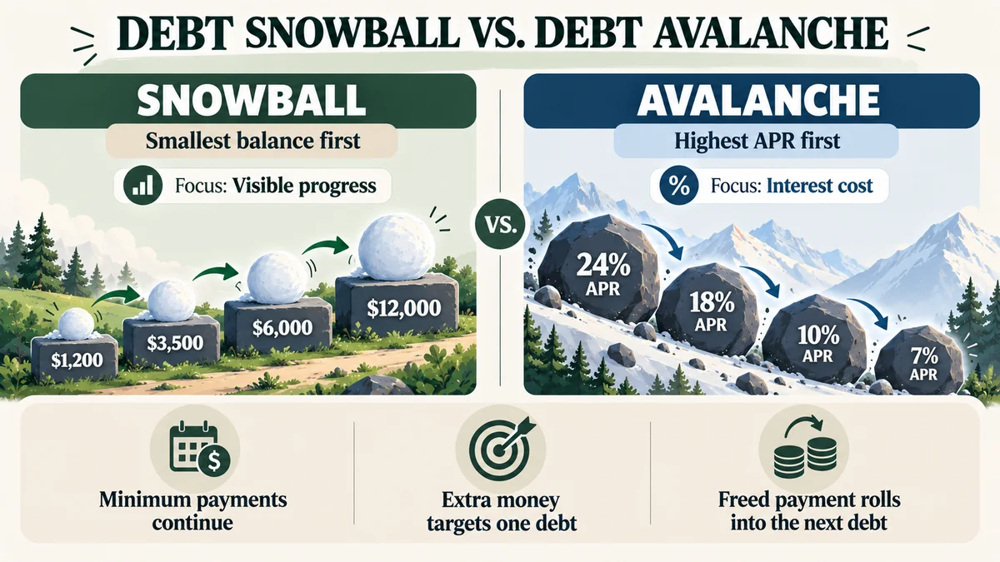
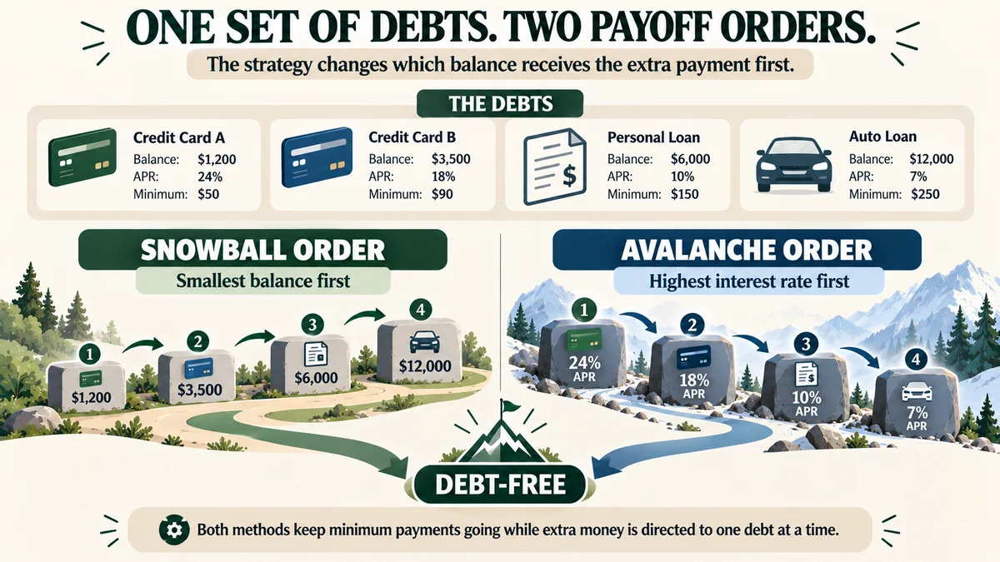
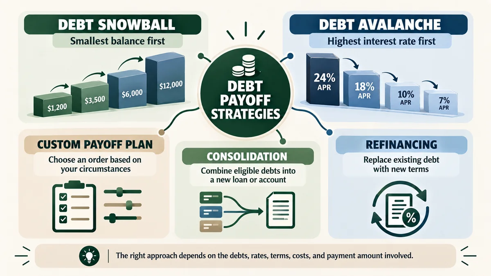
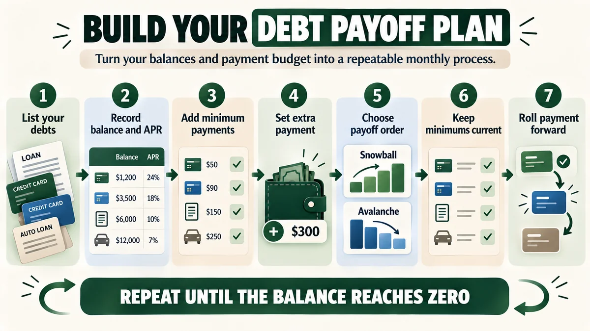
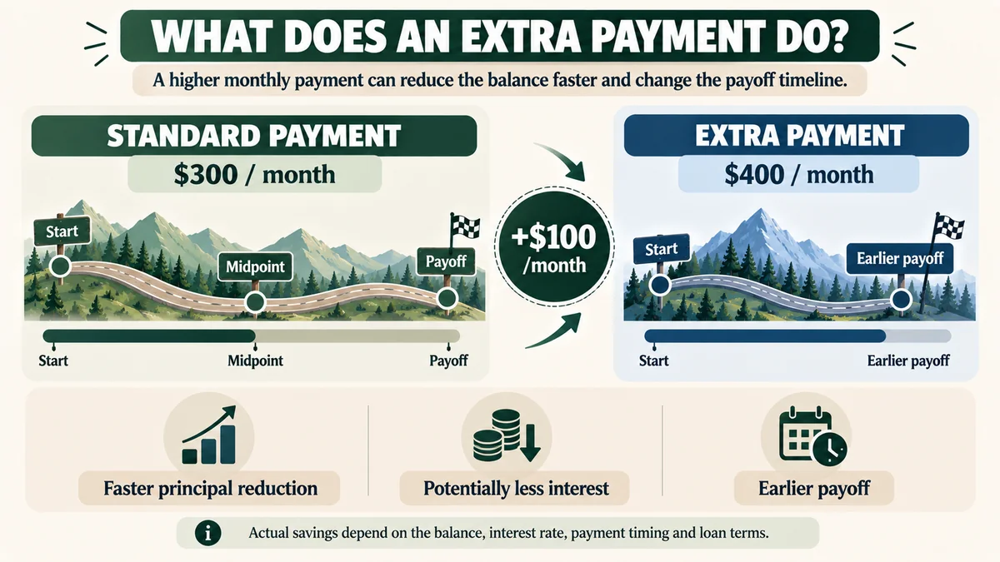
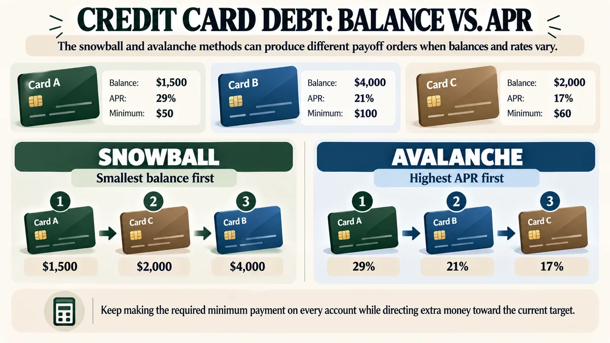

The Snowball vs. Avalanche Question
Paying off several debts can feel harder than it looks on paper. You may know you need to make the minimum payments, but the bigger question is where your extra money should go each month.
Two of the most discussed debt payoff strategies are the debt snowball and the debt avalanche. Both use the same basic structure: keep every required payment current, choose one target debt, and direct your extra payment toward that target. The difference is how that target is chosen.
The snowball starts with the smallest balance. The avalanche starts with the highest interest rate. The Consumer Financial Protection Bureau describes these as two basic debt-reduction strategies, with the highest-rate approach focused on costly interest and the snowball approach focused on eliminating smaller balances first.

Image details
This graphic contrasts the debt snowball, which starts with the smallest balance, with the debt avalanche, which starts with the highest interest rate. Both methods direct extra money toward one debt while required minimum payments continue on the others.
The Two Methods at a Glance
Before choosing a payoff order, it helps to separate two ideas: the math of the debt and the behavior required to follow the plan. A strategy that looks efficient on a spreadsheet still has to be workable month after month.

Image details
The snowball path orders debts from smallest balance to largest. The avalanche path orders them from highest APR to lowest. After a target is paid off, the freed payment is rolled into the next target.
Snowball: Sort debts by balance, smallest to largest.
Avalanche: Sort debts by APR, highest to lowest.
Shared rule: Keep required minimum payments going on every account.
How the Debt Snowball Method Works
The debt snowball method puts your smallest balance at the front of the line. Interest rates are not used to set the order. The idea is simple: remove one balance, free up its payment, then use that larger payment on the next debt.

Image details
The illustration shows four balances growing from $1,200 to $12,000. The smallest balance is the first target, and each completed debt increases the payment available for the next balance.
- List your debts. Sort them from the smallest balance to the largest.
- Pay every minimum. Keep the required payment going on all other accounts.
- Attack the smallest balance. Put your extra monthly money toward that debt.
- Roll the payment forward. After the target reaches zero, add that freed payment to the next debt.
Why the snowball can feel powerful
A paid-off account is a visible milestone. That matters because debt repayment is a long process, and a plan that gives you regular evidence of progress can be easier to stick with. Investopedia describes the snowball as a strategy built around quick wins and notes that it may suit people who value visible progress and motivation.
The trade-off
The downside is that balance size does not tell you how expensive a debt is. A $1,000 balance at 8% APR is very different from a $1,000 balance at 29% APR. If the highest-rate debt is left alone while you clear lower-rate balances, more interest can accrue than under an order based on APR.
How the Debt Avalanche Method Works
The debt avalanche method puts the highest interest rate first. You continue making required minimum payments on every debt, then direct your extra payment to the balance with the highest APR. Once that balance is gone, the extra payment moves to the next-highest rate.

Image details
The illustration shows debts at 24%, 18%, 10%, and 7% APR. The highest-rate debt receives the extra payment first, then the payment moves down the rate list as each target is cleared.
- List your debts. Sort them from the highest interest rate to the lowest.
- Pay every minimum. Keep all required payments current.
- Attack the highest APR. Direct your extra payment toward the costliest interest rate.
- Roll the payment forward. When the target is paid off, move the full available payment to the next-highest APR.
Why the avalanche focuses on interest
Interest is calculated from the amount still owed and the applicable rate. When two debts receive the same extra-payment budget, reducing a higher-rate balance sooner generally reduces the amount of interest that balance can generate. That is the central mathematical reason people use the avalanche approach.
The trade-off
The first target under an avalanche plan may be a large balance. That can mean several months of payments before you get the satisfaction of seeing an account reach zero. If visible milestones are important to you, that waiting period is worth considering.
Debt Snowball vs. Debt Avalanche: Side-by-Side

Image details
The comparison graphic places the two strategies side by side. Snowball emphasizes visible progress by clearing smaller balances first; avalanche emphasizes interest cost by targeting the highest APR first.
Neither method changes the amount you owe by itself. The main difference is the order of attack. That can change both the timing of account closures and the amount of interest that accumulates before each balance is cleared.
| Feature | Debt Snowball | Debt Avalanche |
|---|---|---|
| First target | Smallest balance | Highest interest rate |
| Main focus | Visible progress | Interest cost |
| Minimum payments | Continue on every debt | Continue on every debt |
| Extra payment | Smallest balance | Highest APR balance |
| When methods differ | When smallest balance is not the highest APR | When the highest APR is not the smallest balance |
If the same debt is both the smallest balance and the highest APR, the two methods can begin with the same target. The difference becomes clearer when balances and rates point in different directions.
A Real-World Debt Payoff Example
Imagine four debts and an additional $400 per month that can be directed toward one target. Here is the set used in our example graphic:

Image details
The example uses four debts: two credit cards, a personal loan, and an auto loan. The graphic shows how the same accounts can be organized into a snowball order or an avalanche order.
| Debt | Balance | APR | Minimum |
|---|---|---|---|
| Credit Card A | $1,200 | 24% | $50 |
| Credit Card B | $3,500 | 18% | $90 |
| Personal Loan | $6,000 | 10% | $150 |
| Auto Loan | $12,000 | 7% | $250 |
In this particular example, the smallest balance is also the highest APR. That means both strategies start with Credit Card A. This is a useful reminder that snowball and avalanche do not always produce different payment orders. The methods diverge when the smallest balance and highest APR belong to different accounts.
Once you have your real balances, APRs, minimum payments, and extra monthly amount, you can model the exact payoff timeline with the ClearlyCheck Debt Free Calculator.
Which Method Can Reduce Interest Faster?
The avalanche method is designed around the cost of interest. When the extra payment goes to the highest-rate balance first, you reduce the portion of your debt that is accruing interest at the highest rate as early as possible. Under a fixed-rate, same-payment comparison, that generally produces a lower interest total than an order that leaves the higher-rate balance untouched for longer.
That does not mean every avalanche calculation produces a dramatic difference. If your rates are close together, or the balance amounts are small, the difference may be modest. If rates vary widely, the order can matter much more.
A simple way to think about it
Suppose one card charges 29% APR and another charges 17%. If both balances are left open for another month, the 29% balance is accumulating interest at the higher rate. Directing extra money toward that balance first is the core logic behind avalanche.
Why the Snowball Can Still Make Sense
Debt payoff is not performed in a spreadsheet. You have to make the payment every month, keep the plan in sight, and continue when the first few months do not feel dramatic.
The snowball gives you a clear definition of progress: one balance reaches zero. For some people, removing an account quickly can make the overall plan feel more manageable. Investopedia similarly describes the snowball as a strategy centered on quick wins and motivation.
The useful question is not only "Which order is mathematically efficient?" It is also "Which plan can I follow consistently?" You can compare both approaches using your actual numbers rather than relying on a general rule.
Other Debt Payoff Methods

Image details
The strategy map places snowball and avalanche alongside custom payoff plans, consolidation, and refinancing. These approaches can involve different costs, terms, eligibility rules, and practical trade-offs.
Snowball and avalanche are not the only ways to approach debt. Depending on the situation, people also use custom payoff rules, debt consolidation, refinancing, balance transfers, or structured debt management plans.
Custom payoff plan
A custom plan might prioritize a debt because of a promotional rate ending soon, a fee structure, a co-signer, or another factor that is not captured by balance size alone. The benefit is flexibility. The challenge is that the rule can become less clear unless you write it down.
Consolidation and refinancing
Consolidation combines eligible debts into a new loan or account. Refinancing replaces existing debt with new terms. These options can simplify payments or change the interest rate, but they can also involve fees, new terms, or eligibility requirements. Lowering the monthly payment is not automatically the same thing as lowering the total amount you will pay.
Balance transfers and debt management plans
A balance transfer can move eligible credit card balances to a promotional account, while a debt management plan is typically arranged through credit counseling for qualifying unsecured debt. Both require attention to fees, promotional periods, account terms, and the risk of taking on new debt while you are trying to repay the old balances.
How to Build a Debt Payoff Plan

Image details
The seven steps are to list debts, record balances and APRs, add minimum payments, set an extra payment, choose an order, keep minimums current, and roll each freed payment into the next target.
A good payoff strategy is easier to follow when you turn it into a routine. Start with the numbers you can verify, then automate the parts that should happen every month.
- List every debt. Include credit cards, personal loans, auto loans, student loans, and any other balances you are actively repaying.
- Record the balance, APR, and minimum payment. Use your latest statements or lender account information.
- Add up all required minimums. This tells you the amount that must be covered before any extra payment is available.
- Choose your extra payment. Base it on a monthly amount you can sustain rather than a number that only works in a good month.
- Choose your payoff order. Decide whether you are following snowball, avalanche, or a clearly defined custom rule.
- Keep every account current. A target debt gets the extra money, but other accounts still need their required payments.
- Roll the freed payment forward. Each time a balance reaches zero, redirect the amount that was going to that account to the next target.
Review the plan when a balance, APR, minimum payment, income, or available cash changes. Your payoff strategy should reflect your current numbers, not an old spreadsheet.
How Extra Payments Change the Timeline

Image details
The graphic compares a standard $300 monthly payment with a $400 payment. The higher payment applies more cash to principal over time, which can lead to an earlier payoff and potentially less interest.
Extra payments matter because they reduce principal faster. Once the principal is lower, future interest charges are calculated on a smaller balance. The effect compounds across the remaining payment schedule.
There is no universal "magic" extra payment. Try a few realistic amounts in the Debt Free Calculator and compare the resulting payoff date and total interest. That turns the idea of "pay a little extra" into something measurable.
Credit Card Debt: Balance vs. APR

Image details
The example compares three cards with different balances and APRs. Snowball orders them by balance, while avalanche orders them by interest rate, showing why the methods can diverge after the first target.
Credit cards make the distinction between snowball and avalanche especially easy to see because APRs can differ substantially between accounts. Consider three cards: Card A has a $1,500 balance at 29% APR, Card B has $4,000 at 21%, and Card C has $2,000 at 17%.
The snowball order is Card A, Card C, then Card B because it follows balance size. The avalanche order is Card A, Card B, then Card C because it follows APR. The first target happens to be the same, but the next targets are different.
Whichever order you choose, keep the required minimum payment going on every card. The strategy controls where the extra money goes; it does not replace the obligation to make required payments.
What If You Are Already Behind on Payments?
If an account is already past due, the first issue may not be choosing snowball versus avalanche. Missing required payments can create late fees, additional interest, collection activity, and credit-report consequences depending on the account and how delinquency is reported.
Start by getting a clear picture of what is overdue, what is due now, and which creditors you need to contact. Ask creditors about hardship options or payment arrangements when appropriate. The CFPB also recommends understanding what you owe and what repayment options are available before building a debt-reduction plan.
If your debt is becoming unmanageable, a reputable nonprofit credit counseling organization can help you review your budget and possible repayment options. Be cautious with companies that promise to eliminate debt quickly or ask for large fees before providing meaningful services.
Sources & Further Reading
This guide is written as educational information. The strategy descriptions and credit-score discussion below are grounded in consumer-finance and credit-scoring sources, while the examples are illustrative.
- Consumer Financial Protection Bureau: How to reduce your debt
- myFICO: What’s in my FICO Scores?
- myFICO: How Payment History Impacts Your Credit Score
- Investopedia: How to Choose a Debt Payoff App
Frequently Asked Questions
What is the debt snowball method?
What is the debt avalanche method?
What is the difference between debt snowball and debt avalanche?
Which debt should I pay first?
Does the debt avalanche method save more money?
Can the debt snowball method cost more interest?
Can I combine the snowball and avalanche methods?
How much extra should I put toward debt each month?
What happens after I pay off my smallest debt?
Can I switch from snowball to avalanche?
Does paying off debt improve my credit score?
What if I cannot afford more than the minimum payment?
Which Method Fits Your Situation?
The debt snowball and debt avalanche are both structured ways to decide where your extra payment goes. Snowball uses the smallest balance first. Avalanche uses the highest interest rate first. When those two rules point to different accounts, the choice changes the order in which balances are attacked.
Use the snowball when visible milestones are an important part of how you stay engaged. Use the avalanche when reducing interest cost is the main priority and you are comfortable waiting longer for some balances to disappear. A hybrid approach can also be reasonable when you have a clear rule for when you will switch.
The most useful next step is to stop guessing and run your own numbers. Enter your balances, APRs, and monthly payment in the ClearlyCheck Debt Free Calculator to see how different payment amounts can change your payoff timeline.